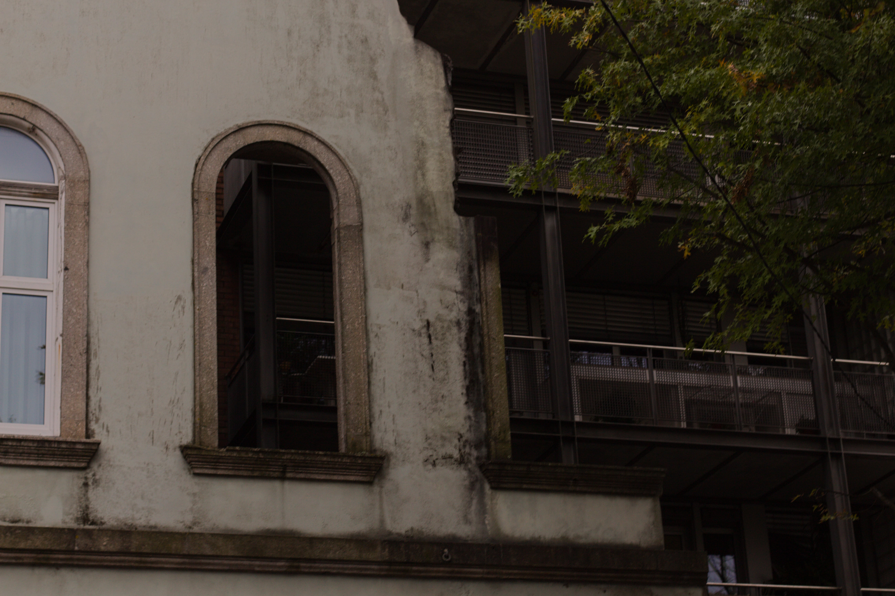
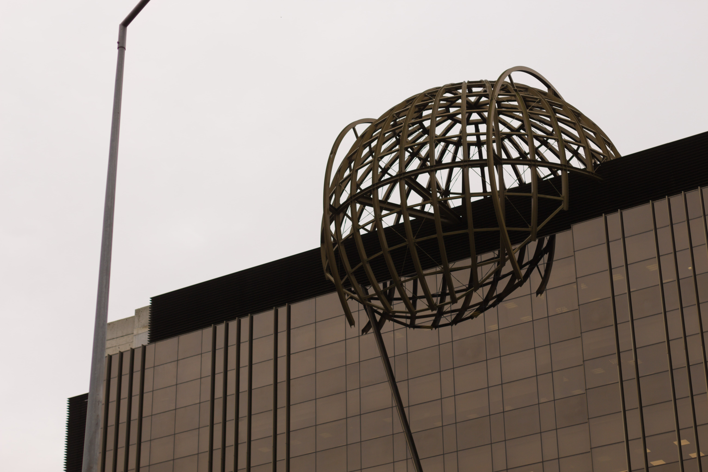
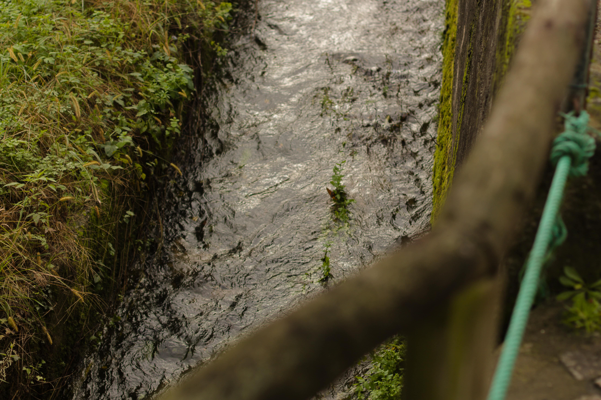
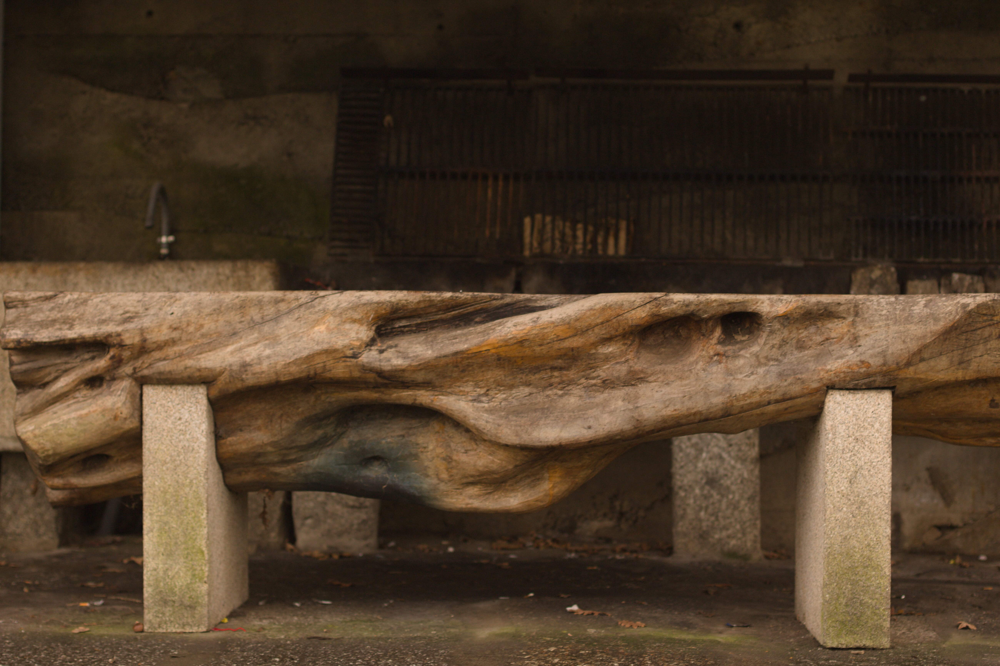
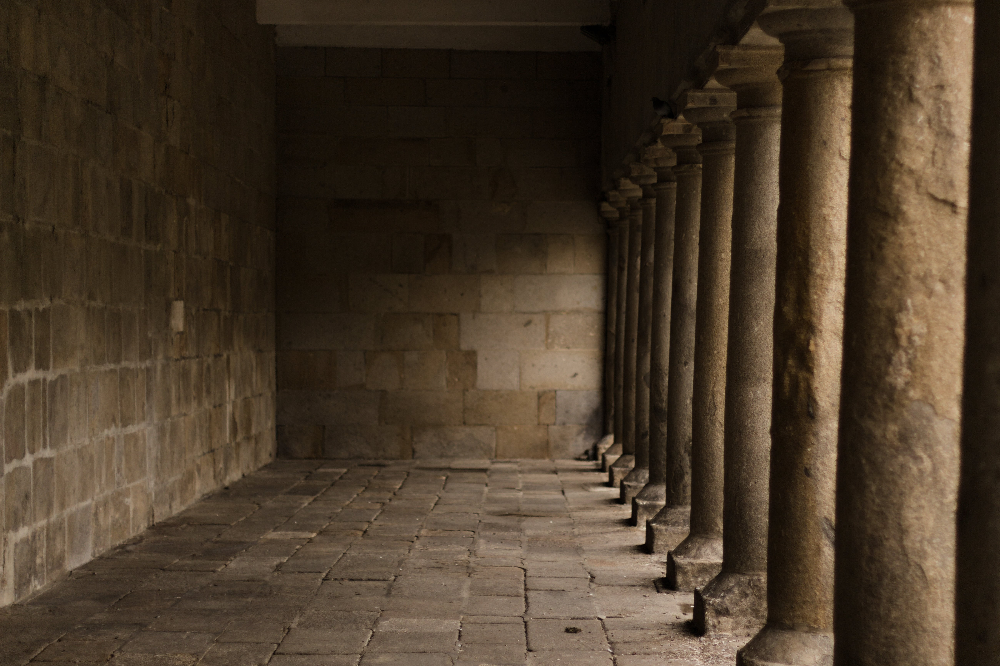

Symmetry; (noun): beauty of form arising from balanced proportions.

Hall; (noun): a corridor or passage in a building.

Decay; (noun): the process of gradually becoming inferior or worse.

Alley; (noun): a narrow passage between or behind buildings.

Railway; (noun): a network of tracks for trains to travel on.

Creek; (noun): a small stream or minor tributary of a river.

Trunk; (noun): the main woody stem of a tree.

Tree; (noun): a woody perennial plant with a single stem or trunk.

Pillars; (noun): tall vertical structures used for support or decoration.
Cloudy; (adjective): overcast with clouds, dim or obscure.

Summit; (noun): the highest point of a hill or mountain.

Surfer; (noun): a person who rides on waves while standing or lying on a surfboard.